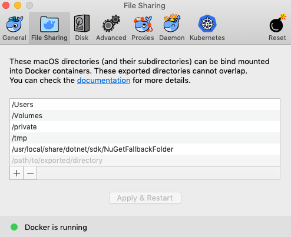
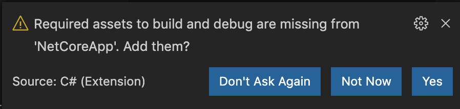

Debug .NET Core within a container
Prerequisites
Install the .NET Core SDK, which includes support for attaching to the .NET Core debugger.
Install the Visual Studio Code C# extension, which includes support for attaching to the .NET Core debugger with VS Code.
macOS users only: Add
/usr/local/share/dotnet/sdk/NuGetFallbackFolderas a shared folder in your Docker preferences.
Walkthrough
If needed, create a .NET Core project with
dotnet new.Open the project folder in VS Code.
Wait until a notification appears asking if you want to add required assets for debugging. Select Yes:

Open the Command Palette (
kb(workbench.action.showCommands)) and enter Docker: Add Docker Files to Workspace.... If you have already dockerized your app, you can instead do Docker: Initialize for Docker debugging. Follow the prompts.Switch to the Run view (
kb(workbench.view.debug)).Select the Docker .NET Core Launch launch configuration.
Optionally, set a breakpoint.
Start debugging! (
kb(workbench.action.debug.start))
Running and debugging with SSL support
To enable SSL (using the HTTPS protocol), you will need to make a few changes to your configuration.
In the Dockerfile, add an
EXPOSEline to the base section to define a separate port for HTTPS / SSL. Keep a separateEXPOSEline with a different port for HTTP requests.FROM mcr.microsoft.com/dotnet/aspnet:5.0 AS base WORKDIR /app EXPOSE 5000 EXPOSE 5001In the
.vscode/tasks.jsonfile, addconfigureSsl: trueto thenetCoresection. Also, add an environment variableASPNETCORE_URLSin thedockerRunsection of thedocker-run: debugtask, with the same port numbers you defined in the Dockerfile:dockerRun: { "env": { "ASPNETCORE_URLS": "https://+:5001;http://+:5000" } } netCore: { "appProject": "${workspacefolder}/MyProject.csproj", "enableDebugging": true, "configureSsl": true }
For additional customization options, see the documentation on Tasks and Debug containerized apps.